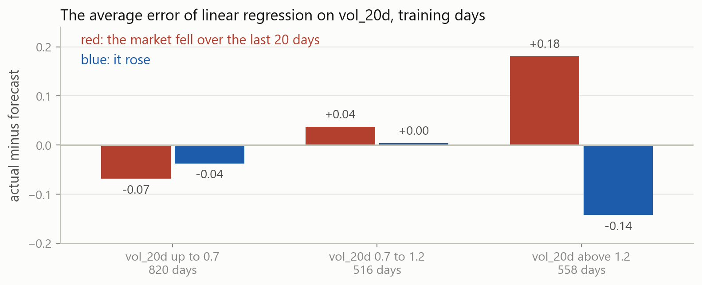
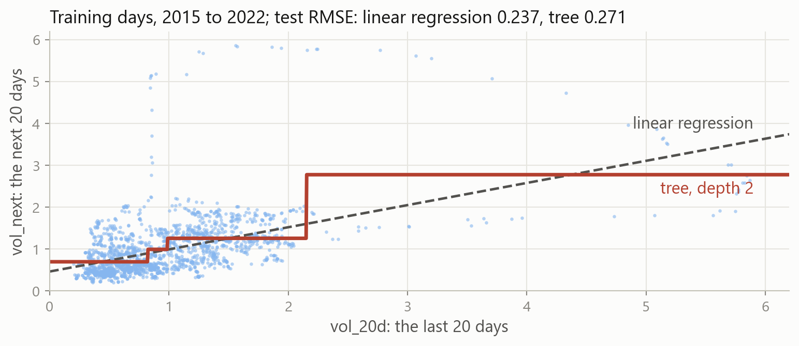
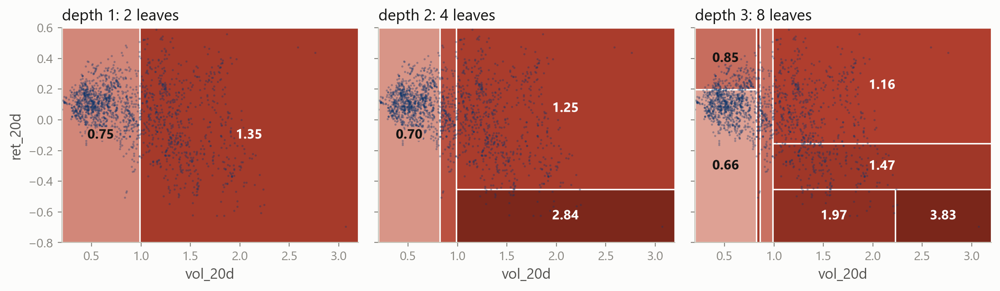
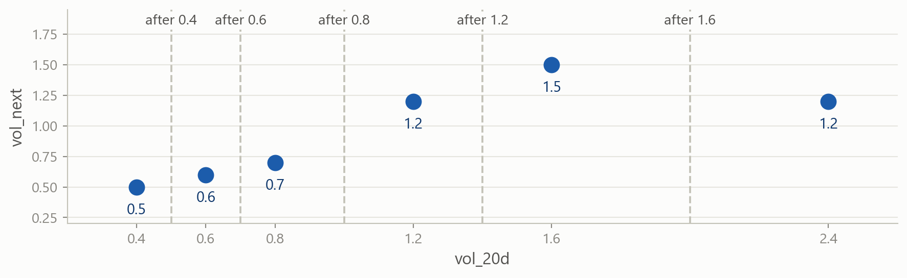
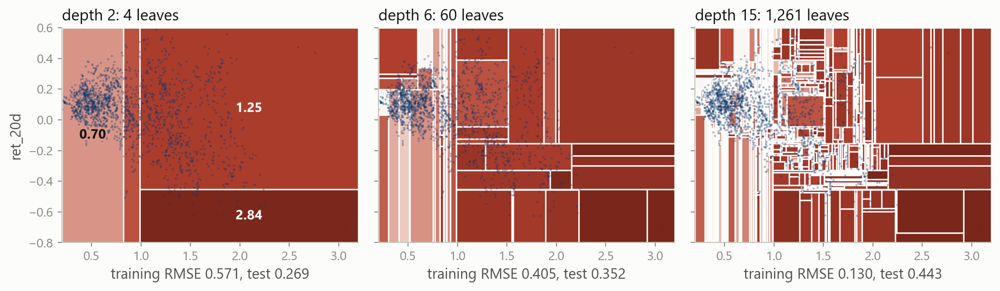
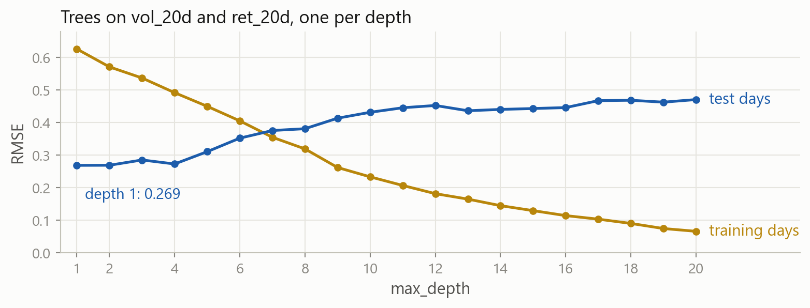
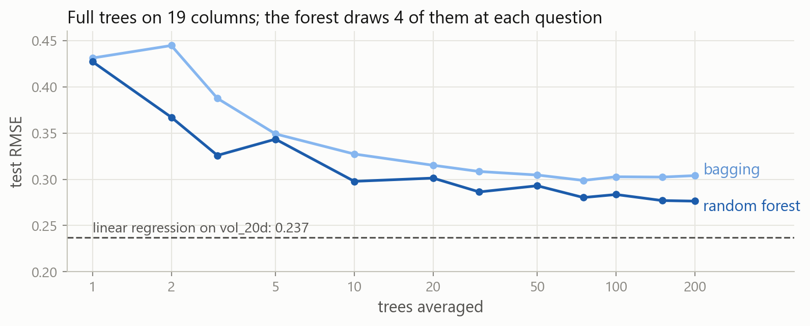
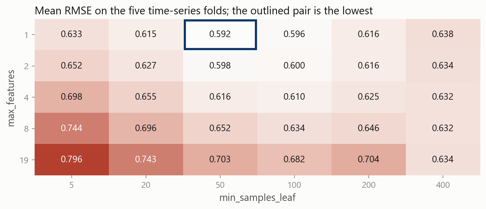
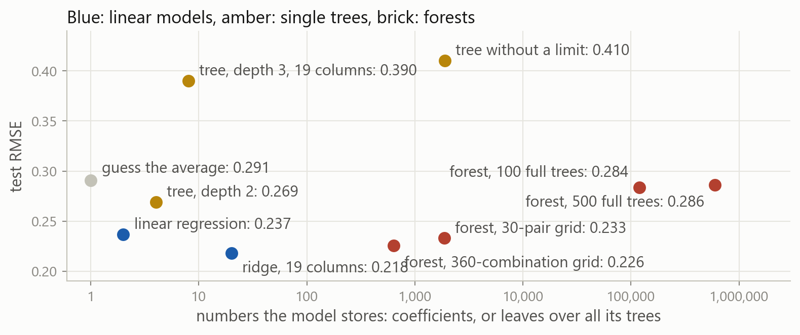

Machine Learning in Finance · Session 11
| model | defined by | test score | |
|---|---|---|---|
| a number | linear regression (OLS) | \min_{\beta}\ \sum_i \big(y_i - \beta_0 - \sum_j \beta_j x_{ij}\big)^2 | RMSE 0.237 on one column, 0.248 on 19 |
| ridge | \min_{\beta}\ \text{RSS} + \alpha \sum_j \beta_j^2 | RMSE 0.218 | |
| lasso | \min_{\beta}\ \text{RSS} + \alpha \sum_j \lvert \beta_j \rvert | RMSE 0.217 | |
| a label | logistic regression | P(y = 1) = \sigma\big(\beta_0 + \sum_j \beta_j x_j\big) | AUC 0.748 |
| k-nearest neighbours | \hat p = \frac{1}{k} \sum_{k\ \text{nearest}} y_i | AUC 0.749, k = 25 |
Every model so far fits one formula to the whole table, or averages the nearest rows. Today’s model asks yes-or-no questions instead, with the cuts chosen from the data.
One row per trading day, and vol_next is the index’s volatility over the next 20 days. The split, the 19 columns and rmse are the ones ridge and lasso were scored with.
plot_treeThe exercises and the case are where you practise each of these.
Part 1
A pattern in the volatility table that one coefficient per column cannot follow.

When vol_20d is above 1.2, linear regression is 0.18 too low after a 20-day fall and 0.14 too high after a rise. It gives both kinds of day the same forecast.
When volatility is high, the next 20 days stay high after a fall and calm down after a rise. How much vol_20d matters depends on the market’s direction.
One coefficient per column, the same after a fall and after a rise. A different slope for falls has to be written in by hand as a new column, at a cut already known.
A model of this table has to ask about the level first, and then about the direction when the level is high, with the cuts placed by the data.
Part 2
What a tree is, how it forecasts, and how to write it down.
A day answers the questions from the root down and lands in one leaf. A day with vol_20d at 1.5 and ret_20d at −0.6 gets 2.84: the average of 47 training days.

On vol_20d alone, a tree of depth 2 cuts at 0.82, 0.99 and 2.15 and forecasts four flat steps. On the test days it scores 0.271, linear regression 0.237.

With two columns each question cuts the plane in two, and each level cuts every box again. Each box is shaded by its forecast; the dots are the training days.
\hat f(\mathbf{x}) = \sum_{m=1}^{M} c_m \,\mathbf{1}\{\mathbf{x} \in R_m\}
The leaves are boxes R_1, \dots, R_M, and c_m is the mean vol_next of the training days in box m. The indicator picks out the one box holding \mathbf{x}.
In the tree of depth 2, M = 4, and the four c_m are 0.70, 0.99, 2.84 and 1.25.
| model | a forecast is | it needs |
|---|---|---|
| linear regression | one straight formula for the whole table | the shape written in: a column for every bend or interaction |
| k-nearest neighbours | the average of the k closest training rows | a scaler, and a distance that suits the columns |
| a tree | the average of the training rows in the same box | enough rows to place the cuts |
A tree forecasts from nearby training rows, as k-nearest neighbours does, but its neighbourhoods are boxes placed by the data, and a scaler changes nothing.
Part 3
How the questions are chosen, one at a time.

The six are real training days, rounded to one decimal. A question on vol_20d can cut them in five places; the best cut leaves each box with days as alike as possible.
A box forecasts one number, c, for all its days. The squared error is smallest where its slope in c is zero:
\frac{d}{dc}\sum_{i} (y_i - c)^2 = -2\sum_{i} (y_i - c) = 0 \quad\Longrightarrow\quad c = \bar y
The best forecast is the box’s mean, and what is left is its RSS, \sum_i (y_i - \bar y)^2. Three days at 0.5, 0.6 and 0.7 forecast 0.6 and leave 0.02.
| cut after | left box | right box | total RSS |
|---|---|---|---|
| no cut | 6 days, mean 0.95: 0.815 | 0.815 | |
| 0.4 | 1 day, mean 0.5: 0 | 5 days, mean 1.04: 0.572 | 0.572 |
| 0.6 | 2 days, mean 0.55: 0.005 | 4 days, mean 1.15: 0.330 | 0.335 |
| 0.8 | 3 days, mean 0.6: 0.020 | 3 days, mean 1.3: 0.060 | 0.080 |
| 1.2 | 4 days, mean 0.75: 0.290 | 2 days, mean 1.35: 0.045 | 0.335 |
| 1.6 | 5 days, mean 0.9: 0.740 | 1 day, mean 1.2: 0 | 0.740 |
Each row adds up the RSS of the two boxes. The cut after 0.8 leaves 0.080, far below the rest: it separates the calm days from the busy ones.
\min_{j,\;s}\;\Bigg[\sum_{i:\;x_{ij} \le s} \big(y_i - \bar y_{L}\big)^2 \;+\; \sum_{i:\;x_{ij} > s} \big(y_i - \bar y_{R}\big)^2\Bigg]
Column j and cut s make the two boxes, with means \bar y_L and \bar y_R. It is the RSS of least squares, with one constant per box in place of a line.
scikit-learn tries every column and every cut, and keeps the smallest.
rss adds up each value’s squared distance from the mean of its box. The cut after 0.8 leaves 0.02 on the left and 0.06 on the right, as in the table.
A loop tries six cuts on the 1,894 training days. Without a cut the RSS is 908.5, and the cut at 1.25 leaves the least of these six, 752.1.
Each step keeps the cut with the smallest RSS inside one box, and earlier cuts are never revised: a greedy search. Three questions take the RSS from 908.5 to 617.6.
Part 4
Fitting a tree, drawing it with plot_tree, and reading its forecasts.
A stump, a tree with one question, tries every cut on both columns.
| line | in the top box | what it says |
|---|---|---|
| the question | vol_20d <= 0.986 |
True goes left, False right; vol_20d beat ret_20d |
squared_error |
0.48 | the box’s RSS divided by its days: the variance of vol_next |
samples |
1894 | the training days in the box |
value |
0.983 | the mean of vol_next in the box: its forecast |
The two leaves forecast 0.745 for the 1,154 calmer days and 1.353 for the 740 busier ones. Each leaf’s value is its c_m.
Keep only the busy days, with vol_20d above 0.986, and fit a stump to them. Which question does it ask?
A mask keeps the rows where a condition holds, as in the loop over cuts. Fit on busy[pair] and busy["vol_next"].
Inside the busy box the best question is about ret_20d. After 20 days that fell 0.45 percent a day or more, the next 20 averaged 2.84; otherwise 1.25.
This is how a tree finds an interaction: each question is chosen for the rows of one box. A tree of depth 2 does it for every box.
Each box of the stump gets a second question of its own. filled=True shades a box by its forecast, and impurity=False leaves out the error line.
The 482 test days get only three different forecasts: none had high volatility after a steep fall. The error is 0.269, against 0.237 for linear regression.
There is no scaler, because a cut compares one column with one number. Three levels of questions on all 19 columns score 0.390, worse than guessing the training average, 0.291.
Draw tree in the clearer style. Which columns does it ask about, and why might that go wrong on the test days?
The column names are in columns. label="root" names the fields in the top box only, and precision=2 and fontsize=9 keep the text small.
The second question is Disney’s volatility above 1.26. It was on 330 of the 482 test days, so they got 1.20, while the index’s next 20 days averaged 0.80.
The first question sets aside the 27 most volatile training days, 26 of them in 2020: squared errors weigh the biggest misses most.
Part 5
A tree without a limit ends with a leaf for every training day.
Grow a tree with no limit on vol_20d and ret_20d, and score it on the days it was grown on; the depth-2 tree scores 0.571 there. What will the error be?
The tree asks up to 32 questions and ends with 1,894 leaves, one for every training day. On the test days its error is 0.466, against 0.269 at depth 2.

The same plane is cut at three depths. At depth 15 there are 1,261 boxes for 1,894 days: the training error is 0.130, the test error 0.443.

The test error is lowest at depth 1 or 2, 0.269, and climbs to 0.471 by depth 20. The training error falls towards 0.
Depth moves a tree along the bias-variance trade-off: a shallow tree is biased, and a deep one changes with every sample of days.
TimeSeriesSplit scores each fold on later days, as it did for ridge’s alpha; the folds include 2020, so their errors are larger. Depth 2 wins, at 0.637.
A cut is allowed only if both boxes keep at least min_samples_leaf days. At 100 the folds’ error is 0.612, and the tree has 14 leaves and depth 6.
R_\alpha(T) = R(T) + \alpha\,|T|
R(T) is the mean squared error left in the leaves of tree T, and |T| counts them; as in ridge, \alpha prices size. The folds choose 0.02: four leaves.
Part 6
Why one deep tree is not enough, and two ways of averaging many.
Two full trees, each grown on a random half of the training days, differ by 0.39 on the average test day. The average of the two scores 0.329, better than either.
\operatorname{Var}\Big(\frac{1}{B}\sum_{b=1}^{B}\hat f^{\,b}(\mathbf{x})\Big) = \frac{\sigma^2}{B}
If B trees grown on independent samples each forecast with variance \sigma^2, their average has variance \sigma^2/B. There is one training set, so the samples come from it.
A deep tree has low bias and high variance, and variance is the part an average removes.
replace=True puts each drawn day back, and nunique counts the distinct days. A day is missed by all n draws with probability (1 - 1/n)^n \approx e^{-1} = 0.37, so about 63 percent are in.
Each tree grows fully on its own bootstrap sample, and the average is \frac{1}{B}\sum_b \hat f^{\,b}(\mathbf{x}) with B = 20. This is bagging, from bootstrap aggregating: 0.320, where one full tree scored 0.410.
BaggingRegressor grows and averages the trees and keeps them in estimators_. All 20 open with a volatility column, 11 with vol_5d.
\operatorname{Var}\Big(\frac{1}{B}\sum_{b=1}^{B}\hat f^{\,b}(\mathbf{x})\Big) = \rho\,\sigma^2 + \frac{1-\rho}{B}\,\sigma^2
\rho is the correlation between two trees’ forecasts. More trees shrink only the second term; the first stays until the trees are made less alike.
max_features="sqrt" lets each question choose among 4 of the 19 columns, drawn at random. Without it the regressor uses every column, which is bagging.
The 100 trees open with 12 different columns, and no column opens more than 22. Each tree is weaker, and the trees differ more.

The forest’s average errs less than bagging’s at every size: 0.284 against 0.303 at 100 trees. Both flatten after about 50, above linear regression.
Each day is forecast by the trees whose sample left it out: an error of 0.252. On folds that score only later days it is 0.723, against 0.560 for ridge.
A day left out of a tree has its neighbours in the bag, and their next 20 days overlap its own by 19. On days, choose settings on TimeSeriesSplit folds.
Build a forest like forest, but with leaves of at least 100 days, and print its test RMSE. Is it better than the forest of full trees?
min_samples_leaf sets the smallest leaf, as it did for one tree. Keep the other settings of forest.
Leaves of at least 100 days score 0.242, against 0.284 for full trees. Linear regression’s 0.237 is still lower.
Part 7
Why settings matter more for trees, what a search costs, and model size.
| model | settings that change the fit | scikit-learn’s default | test RMSE, default and tuned |
|---|---|---|---|
| linear regression | none | 0.237 | |
| ridge | alpha |
1.0 | 0.248, then 0.218 |
| a tree, on two columns | max_depth, min_samples_leaf, ccp_alpha, and more |
no limit: one leaf per day | 0.466, then 0.241 |
| a random forest | the tree’s settings, plus n_estimators and max_features |
100 full trees on every column | 0.303, then 0.233 |
Ridge has one setting, and tuning it moved the error by 0.030. A forest’s defaults grow every tree down to single days, and tuning moved it by 0.070.

GridSearchCV scored 30 pairs on the five folds, 150 forests. One column per question and leaves of 50 days win: 0.233 on the test days, below linear regression’s 0.237.
| search, on five time-series folds | combinations | fitted | time on one core |
|---|---|---|---|
ridge: 7 values of alpha |
7 | 35 models | 0.1 s |
| a tree: 6 depths | 6 | 30 trees | 0.2 s |
a tree: 6 depths, 5 leaf sizes, 6 values of ccp_alpha |
180 | 900 trees | 5 s |
a forest: 5 max_features, 6 leaf sizes, 100 trees each |
30 | 150 forests, 15,000 trees | 26 s |
| the same, times 3 tree counts and 4 depths | 360 | 1,800 forests, 540,000 trees | 14 min |
Every setting multiplies the grid, and the folds multiply it again. The last search took 32 times as long and chose 100 trees of depth 3: 0.226 on the test days.
RandomizedSearchCV(model, grid, n_iter=20, ...) tries 20 combinations drawn at random, when the whole grid would take too long.
time.perf_counter() reads a clock, so the difference is the seconds one forest took here. The grid of 30 pairs fits 150 forests; the last line is its minutes.

The largest model, 500 full trees with 598,735 leaves, took about 1,800 times longer to fit than ridge and forecasts worse than its 20 coefficients.
Part 8
The same questions on the credit table, with a share in each leaf.
One row per card holder, and default is 1 for the 22 percent who defaulted the next month. On this split logistic regression scored an AUC of 0.748.
Each leaf’s value is the two shares; the second is the probability of default.
G = \sum_{k} \hat p_k\,(1 - \hat p_k)
For labels of 0 and 1, a box of n rows with k defaults has an RSS of k(n-k)/n. With two classes G = 2p(1-p), twice that per row, so the same cuts win.
DecisionTreeClassifier measures a box with Gini by default, and criterion="entropy" switches to D = -\sum_k \hat p_k \log \hat p_k.
The rows are separate borrowers, so the out-of-bag score can be trusted: 0.781. On the test rows the forest scores 0.777, against 0.748 for logistic regression.
21,000 separate borrowers, a share of defaults that levels off, and a reversal that depends on another column. The forest beat logistic regression, 0.777 against 0.748.
1,894 days whose windows overlap, a relationship close to a straight line, and calm test years. Ridge beat every tree, 0.218 against 0.226 for the best-tuned forest.
Fit a linear model first, and make the tree beat it on folds that suit the rows.
Always the size of each tree: max_depth or min_samples_leaf, on TimeSeriesSplit folds for days, or out-of-bag for a forest of separate rows. random_state, which fixes the samples and the order in which columns are tried.
Sometimes ccp_alpha, to prune a grown tree. n_estimators: more trees only cost time. max_features, the columns each question chooses among: "sqrt" makes a regressor a forest. class_weight, for labels. n_jobs=-1, to fit a forest’s trees on every core.
Rarely criterion, the error a cut is judged by. max_leaf_nodes, a cap on the number of leaves.
Never needed A scaler. A cut compares one column with one number, so StandardScaler in front of a tree gives the same forecasts.
Linear regression has one slope When volatility was high, linear regression on vol_20d was 0.18 too low after a fall and 0.14 too high after a rise.
A tree is questions, boxes and a formula \hat f(\mathbf{x}) = \sum_m c_m \mathbf{1}\{\mathbf{x} \in R_m\}: each leaf forecasts the mean of its training days.
Grown greedily, one cut at a time Every column and every cut, the smallest RSS, then again inside each box; a stump is one step. The best number for a box is its mean.
plot_tree shows it plot_tree(model, feature_names=...), with filled, impurity=False, precision and label="root". Each box shows its question, error, days and forecast.
Depth is the setting Without a limit: one leaf per training day, an error of 0 on them and 0.466 on the test days. Choose the size of a tree on TimeSeriesSplit folds.
Bagging and forests, for variance Averaging 20 bootstrap trees took the error from 0.410 to 0.320. Drawing columns at random makes the trees differ, and a tuned forest reached 0.226.
Tuning, cost and size Tuning moved the forest by 0.070 and ridge by 0.030. Each setting multiplies a grid, and 500 full trees forecast worse than ridge’s 20 coefficients.
A tree for a label The same cuts, judged by Gini. On the credit table the forest beat logistic regression; on the volatility table linear regression and ridge beat every tree.
Bagging and forests grow deep trees side by side and average away their variance. Boosting grows small trees in sequence, each correcting what the ones before it still get wrong, which removes bias.
plot_tree, depth and pruning on the time-series folds, bootstrap samples, bagging and forests, grids counted and timed, and a tree for a label.Stuck? Ask a friend, ask an AI for a hint rather than an answer, or email jobo@econ.au.dk.